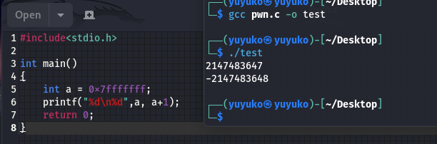

记第一次出Pwn题——AuroraCTF2023第一批Pwn
这次新生赛pwn的题全都是我出的（恼），虽然花了挺多时间的，但还是收获不少。
如何使用docker部署pwn题看这里：使用docker部署pwn题
下面是这次出的8道题的WP，考虑到面试与正式赛的时间间隔较短，且正式赛时间仅有2天，复现时间仅有7天，在出题的时候特意降低了难度，最难只到了ret2libc。出题人水平太菜了求轻喷（
1.nc
不会有人装了虚拟机还不会nc吧(
2.nc2
使用close(1)关闭了标准输出流
1 | exec 1>&0 |
使用上面的指令重定向即可正常回显
至于为什么找了个博客你们参考下：
https://blog.csdn.net/xirenwang/article/details/104139866
flag路径为gift/flag/flag
没错flag外面还套了个叫flag的目录
3.口算Master
使用pwntools脚本完成交互即可
exp：
1 | from pwn import * |
出题的时候本来想着加上% ,&,|运算的，结果生成的时候忘记改了所以你们做到的版本是只有加减乘除（
不过问题不大，这道题就是用来让你们熟悉pwntools脚本交互的。
4.寰宇蝗灾
其实这道题一开始放上去的时候有个bug导致了非预期解就是在菜单的时候输入除了1和2的任意字符都可以直接爆出flag，后面检查才发现源代码有个地方循环没写好，多亏了研一师兄第一时间找到了这个bug
考点：整数溢出
IDA反汇编注意到success函数：

按x交叉引用知check函数调用了：
分析得check函数的传入值为负数的时候就能调用success，回到主函数观察结构
传入check的值是v5，初值为3，每轮循环会*2，v4初值为20，每轮循环中都会–，v4=0的时候退出循环，因此推测v4控制循环次数，共执行20轮循环。
我们知道，3*2^20这个数是一个正数，这并不能满足check的条件，因此需要在attack中进行操作。
下面先简单讲讲什么是整数溢出：
1 | 整数溢出 |
可以自己写个程序验证一下

回到题目，在atack函数中
可以输入一个int类型的数来改变虫群的数量，在这里仅对输入值/2进行了判断，因此可以输入一个负的大数来令虫群数量溢出为负数，例如-2^32-1，由于检验的是输入值/2，因此在一个相当大的区间内的数都是符合条件的。但是在构造大负数的时候要注意不能过大，否则输入数本身就溢出为负数，这时候前面加个负号就从负数变为一个很大的正数，这样就不满足条件了。
5.幽幽子的食物
ret2text
查看保护：
没有开canary，说明可以直接进行溢出
在IDA反汇编后发现有后门函数
主函数：
在s中可读入0x100大小，肯定能溢出。
双击s查看栈结构：
要进行溢出，需要填充0x30（s的大小） + 0x8（rbp）字节的字符，然后再发送目标后门地址。
在汇编界面找到后门函数执行system(“/bin/sh”)的地方，溢出后返回到这里，由于栈对齐的影响返回到gift函数开头可能无法成功getshell，比较保险的方法是直接跳转到这里。
exp：
1 | # coding: utf-8 |
6.幽幽子的食物2
ret2shellcode
shellcode事什么？
shellcode是一段用于利用软件漏洞而执行的代码，shellcode为16进制之机械码，以其经常让攻击者获得shell而得名。shellcode常常使用机器语言编写，由于现代电脑系统基本上启用NX位元保护使得机械码无法直接执行，可透过返回导向编程编写shellcode。 可在暂存器eip溢出后，塞入一段可让CPU执行的shellcode机械码，让电脑可以执行攻击者的任意指令。 ——摘自WikiPedia
ret2shellcode事什么？
参考ctfwiki：https://ctf-wiki.org/pwn/linux/user-mode/stackoverflow/x86/basic-rop/#ret2shellcode
回到本题，让我们先看看这道题的结构
查看保护：
全关了
看IDA反汇编：
首先输出了buf的地址，然后可以在buf写入最多0x20字节，然后对v5进行read，显然在v5处是可以直接溢出的。
这题没有了后门函数，因此就需要用到前面的buf。
根据上面的简介我们已经了解shellcode可以让机器执行指定的命令从而getshell，在本题而言，由于没有开NX保护，可以直接在buf处写入合适长度的shellcode，然后在后面栈溢出返回到buf处即可。
那么，shellcode怎么获得呢，一般来说，如果没有特殊的限制，直接调用asm(shellcraft.sh())就能直接生成一个可行的shellcode，实际测试发现这个生成的shellcode长度超过了buf的长度，因此可以在下面这个网站中找一个更短的别人生成好的shellcode
https://shell-storm.org/shellcode/index.html
对于linux 64位文件，我们应该找的是Linux Intel x86-64列表下的shellcode
这里出题的时候特意让其中的几个shellcode满足条件，可以直接用，如果遇到长度限制更加严格、或者有其他限制的情况，就需要手搓shellcode了。这就不是现在探讨的问题了(
exp:
1 | from pwn import * |
7.StarRail
考点：泄露canary，canary绕过
相信了解了ELF文件保护模式的你们一定知道 canary保护是检测栈溢出的一种手段，开启之后程序会在栈的某个地方填入canary，并将这个canary保存起来。32位程序中的canary为4字节，64位程序中的canary为8字节，且最后一个字节为空白字符（\x00）。
64位程序canary的位置一般位于rbp-8的位置，在程序返回之前，会先比较栈上canary的值和保存的canary值是否相同，如果不同，说明发生了栈溢出，将会跳转到__stack_chk_fail函数，然后程序就会寄掉。
那要绕过canary保护其实也很简单，首先泄露canary，然后在构造payload的时候，在canary的位置把泄露出来的canary填回去就能绕过检测，正常执行栈溢出。
本题开启了canary保护的栈结构如下图所示：
那么可以看到其中var_8对应的就是canary。
可以看到有后门函数：
但是需要用到srcret，那么secret是什么呢，我们可以双击查看
可以看到secret是bss段的一个全局变量。
至此思路基本已经清晰了，那就是绕过canary溢出返回到后门函数，并想办法将secret修改成/bin/sh
在主函数中我们可以看到Login success后会直接将栈上信息整个输出，由于printf字符串会在遇到\x00截断，因此直接输出是无法泄露canary的。
那么如何泄露canary呢，这里留个悬念，剩下的流程看下面的exp可以思考下为什么。不会再来摇我（
exp:
1 | from pwn import * |
8.TiamaT:F minor
考点：ret2libc
就是一道非常常规的ret2libc，要做出来参考其他ret2libc题目的解法解这道题就行，异曲同工。
注意一点：在本地调试的时候要将给出的libc(如果有的话)先patch了。
exp:
1 | from pwn import * |
Pwndbg调试
pwndbg是做pwn题离不开的一个十分重要的工具，熟练应用pwndbg调试程序是你能成功getshell的一个重要保障。
pwndbg基本操作指令：这方面的介绍很多，根据需要自行搜索了解。下面放个例子
gdb.attach()：在pwntools脚本中调用gdb调试，通过传入gdb脚本可以让程序断点在指定位置。
注意：gdb调试只能在打本地的时候用，打远程请务必注释掉gdb调试，否则会报错!
例如:
1 | p = process('./pwn') |
注意地址要是十六进制的，前面要加*
如果是开了pie保护的程序，使用gdb.attach()的方式如下
1 | gdb.attach(p, 'b *$rebase(0x1124)') |